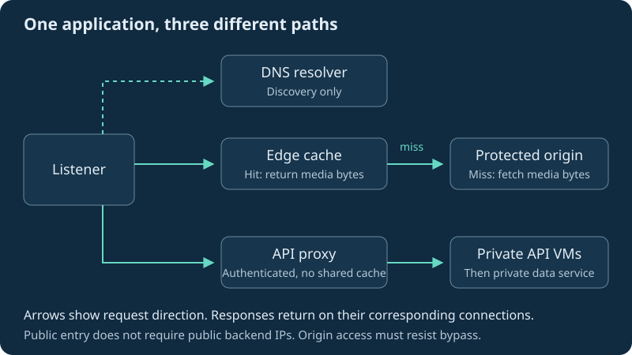
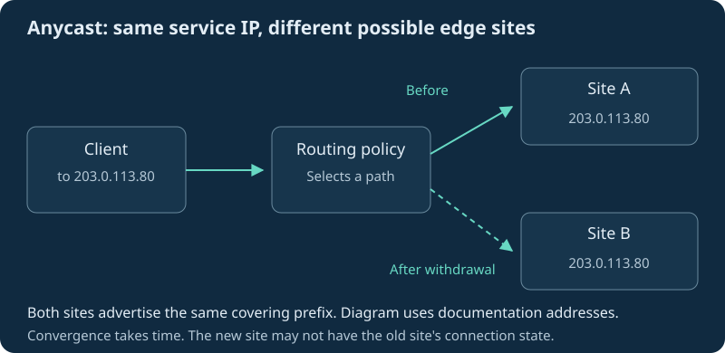

Edge delivery and streaming
A catalog query and an audio segment may both use HTTPS, but they have different caching, capacity and privacy contracts.
By the end you can...
Separate media delivery from personalized APIs, and distinguish caching from global traffic steering.Three workloads, three designs

Anycast: one address, several possible sites

At an internet edge, multiple sites can advertise reachability to the same IP prefix with BGP, the routing protocol used between autonomous systems (independently administered networks). Routers choose routes using policy and path attributes. This can bring a client to a nearby edge in routing terms, but does not guarantee the geographically closest or least-loaded site.
Anycast is not a cache or an application health check. It selects a network path. A service needs health-aware advertisement/withdrawal and sufficient capacity at surviving sites. Routing changes can send a later packet to another site; long-lived connections need an explicit continuity strategy and may reset. DNS steering instead changes the address discovered by future lookups. Neither mechanism copies live connection state.
Explain it to your teammate
A client keeps the same destination IP after an edge site fails. Can traffic reach another site? Is its existing TCP session guaranteed to survive?
Show answer
Yes, an anycast route can converge toward another site advertising the same prefix. No, TCP survival is not guaranteed: the other site may lack connection state. Distinguish routing convergence, application readiness and client recovery.
Protocol reading: RFC 4786: operation of anycast services and RFC 4271: BGP-4.
- Versioned media segments/artwork: cache immutable content near listeners; support range requests where required. Restrict access with a validated entitlement/token design.
- Private playlists and account responses: avoid shared caching by default. Deliberate personalized caching requires correct cache isolation and explicit policy.
- Persistent control streams: verify WebSocket/gRPC support, idle limits, drain behavior and reconnect storms. These are not ordinary cache hits.
CloudFront and Front Door provide HTTP edge delivery and configurable caching. A regional ALB/Application Gateway distributes origin/API work. Global Accelerator optimizes supported TCP/UDP paths without being an object cache. DNS steering changes endpoint discovery, not the bytes of an established stream.
The cache key is a security decision
A cache key decides which requests share a response: hostname, path and configured query/header/cookie dimensions. Ignoring a user-specific dimension can leak another user's data. Including every token can destroy the hit ratio. Define authorization at the edge/origin and caching together; signed URL/cookie behavior differs by product. Never assume a CDN validates a token merely because it appears in the URL.
Listener -> edge cache -- hit --> media bytes
-- miss -> protected origin
Listener -> API entry point -> authorized playlist serviceProtect origins against bypass using supported private-origin connectivity or restricted ingress plus authenticated origin access. A secret header alone is not a substitute for a complete origin access design. WAF addresses selected HTTP threats; volumetric DDoS protection, rate limits and authorization solve different problems.
Global does not mean stateless failover
Health-aware regional steering needs a data strategy: replication lag, write ownership, residency, recovery point and consistency. CloudFront origin groups have specific method and failure-trigger constraints; do not assume arbitrary active-active API failover. Front Door origin-group behavior must also be configured and tested separately.
Do it by hand
100,000 listeners each consume 160 kbit/s of audio. What is total payload throughput? If 95% of bytes hit cache, what reaches the origin?
Show answer
100,000 x 160,000 = 16 Gbit/s payload. A 95% byte hit ratio leaves 5%, or 0.8 Gbit/s, from origin in this simplified steady state. Protocol overhead, retries, region distribution and cold-cache bursts need extra headroom. Request hit ratio alone would not prove this byte saving.
Primary reading: CloudFront cache keys, CloudFront origin failover, Front Door caching.